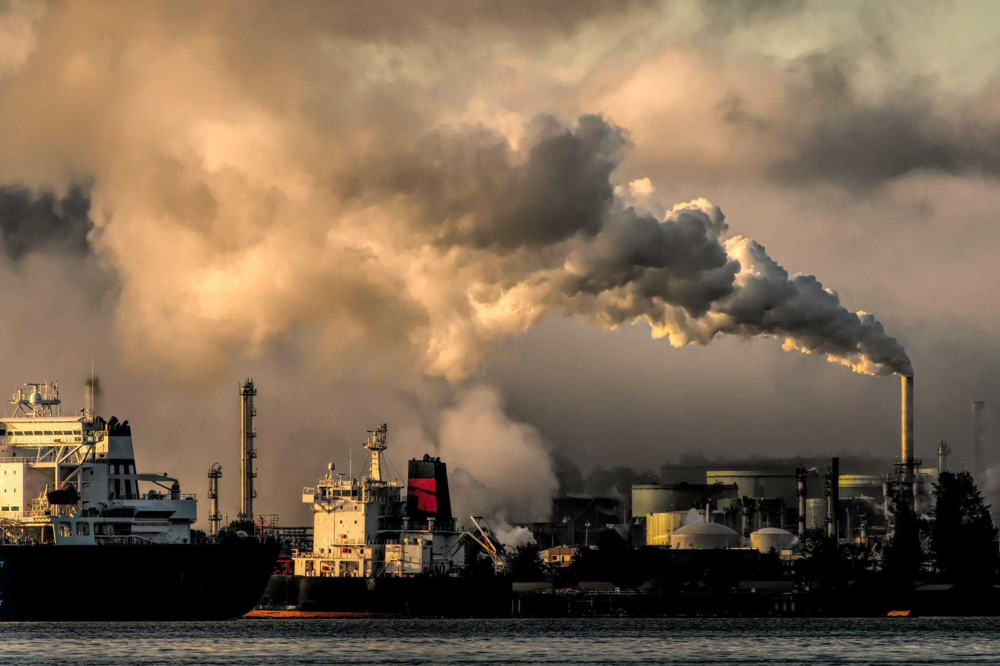
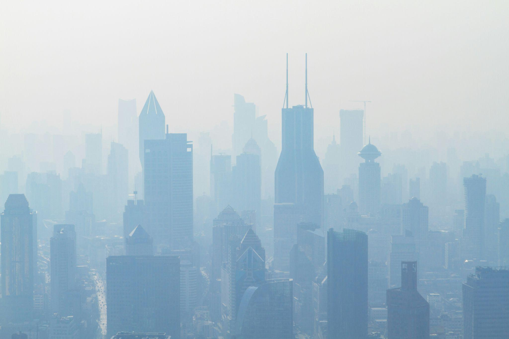

The Perils of Neglecting Flue Gas Cleaning Systems: Understanding the Risks
Flue gas cleaning removes contaminants like sulfur dioxide (SO2), nitrogen oxides (NOx), carbon monoxide, VOCs, heavy metals, and particulate matter from flue gas. Flue gas cleaning solutions are just as important as their production. While flue gas is used across various industries, from petrochemical to manufacturing, power generation, and automobile industries, governments have erected environmental laws to ensure the production and distribution processes are safe for the environment. This article will explore the risks of neglecting flue gas cleaning systems and why companies should adopt environmentally friendly methods in their systems.

Risks of Neglecting Flue Gas Cleaning System
Air Pollution One of the main reasons flue gas cleaning systems are necessary is that flue gas can quickly become an extreme pollutant when combined with other environmental elements. Even in themselves, flue gas impurities cause air pollution. Pollutants like sulfur dioxide (SO2), nitrogen oxide (NOx), heavy metals, particulate matter, and organic compounds are risky to human health and can have dire environmental impacts. Environmental Impact In a world where people are careful about man’s manufacturing impact on the environment, neglecting flue gas cleaning techniques can directly impact the environment and have a residual effect on the company manufacturing the flue gas. To break it down, flue gas pollutants can acidify the soil and water, making them unusable for farming and fishing. In extreme cases, pollutants can kill an extensive range of animal species, lead to the production of poisonous food and water, and cause hunger and discomfort to people. Also, neglecting flue gas cleaning can lead to sanctions. Health When people are exposed to air pollutants like sulfur dioxide, nitrogen oxide, and particulate matter, they can suffer long-term respiratory problems, cardiovascular issues, and other health problems. Neglecting flue gas cleaning methods means subjecting innocent people to health issues, hospital bills, and, sometimes, early deaths. Climate Change Carbon dioxide and methane contribute to global warming. Sudden weather changes, natural catastrophes, and other effects of global warming make it evident that it’s real. We must do everything possible to protect the coming generations. Part of “everything possible” is ensuring that flue gas is cleansed correctly in a flue gas cleaning plant. Beyond the environmental and health impact, neglecting flue gas cleaning can lead to dire regulatory problems. Regulatory problems deface the integrity of any company and its leaders. Sticking to sustainable manufacturing practices is essential to avoid the economic and social impact of sanctions and government-backed legal hiccups on your doorsteps. Flue Gas Cleaning Processes There are many pollutants in flue gas, and the cleaning process is determined by the pollutants you want to remove. Let’s explore some of the standard flue gas cleaning processes. Nitrogen Oxides (NOx): NOx is a pollutant formed during the high-combustion process, contributing immensely to air pollution. On its own, NOX is just a gas; however, when rain falls, NOx combines with water to form acid rain. As explained earlier, acid rain leads to pollution and endangerment of land and water ecosystems. Specialists use techniques like selective catalytic reduction (SCR), selective non-catalytic reduction (SNCR), and low NOx burners to remove NOx from flue gas. While each reduction system has its unique procedure, it aims to convert the harmful NOx into hydrogen and oxygen. Hydrogen Sulfide: Hydrogen sulfide (H2S) is one of the pollutants released into the atmosphere alongside flue gas. It reacts with the atmosphere to form sulfur dioxide, an extremely harmful component. Techniques like wet scrubbing, absorption, dry sorbent injection, and chemical reaction with lime are used to remove sulfur dioxide from flue gas. Carbon monoxide: Techniques that remove carbon monoxide include oxidation catalysts and adsorption systems. Particulate: Particulates include soot, dust, and ash and can be removed using fabric filters and electrostatic precipitators. Heavy metals are removed using sorbent injection technologies, chemical precipitation, and activated carbon adsorption. Conclusion Flue gas cleaning is crucial to the environment. Neglecting it leads to releasing of harmful substances into the environment. Companies and industries must employ safe, sustainable, and environmentally friendly systems to ensure that marine and land ecosystems are safe from their production and manufacturing efforts. In today’s world, there is more concern for the effect of pollutants on people and the world. It’s important to ensure that we leave a world that is still habitable centuries after we have gone. Flue gas cleaning may add to a manufacturing plant’s cost and production capacity needs, but it’s worth it. And even if you don’t consider the environment, consider the heavy fines the government will tax you if they find out you neglect cleaning flue gas.